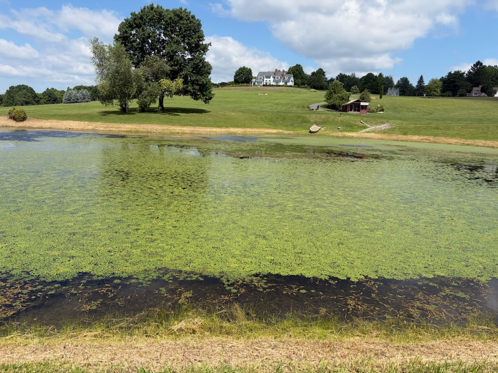
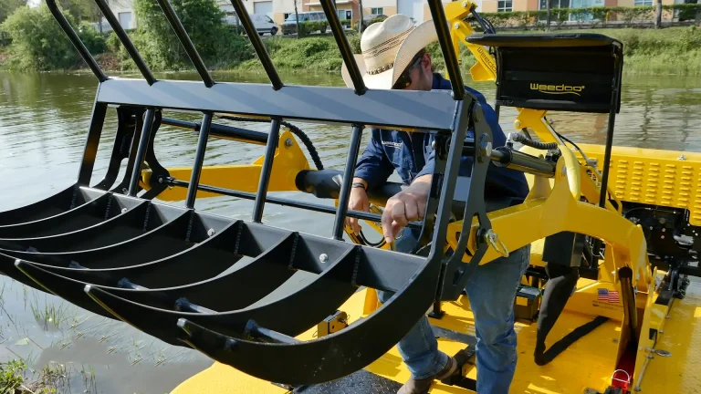
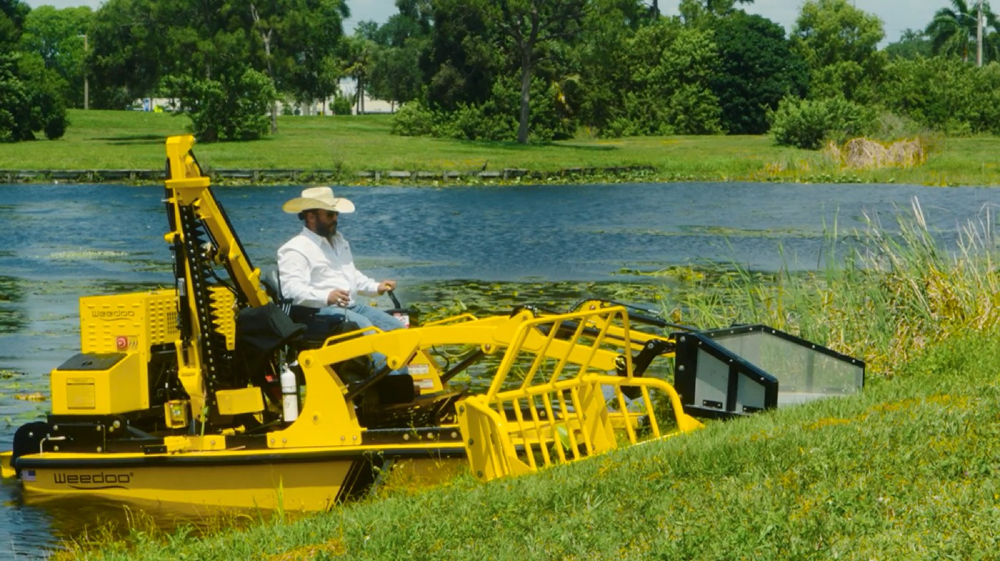
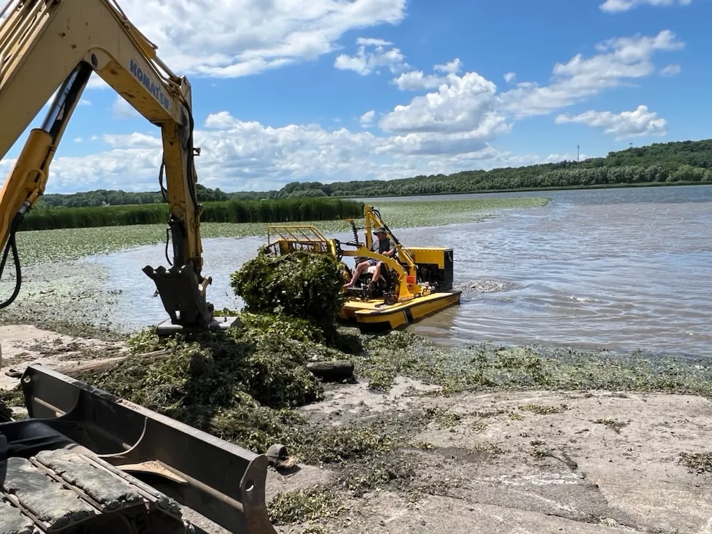

Submerged aquatic weeds
Mechanically cut and collect excessive underwater vegetation affecting access and open water.

Home / Services / Pond weed removal
Remove unwanted weeds, lily pads, cattails, algae, and other floating vegetation from shallow areas of the pond. Our compact work boat mechanically cuts, collects, and removes excessive growth without the need for herbicide application.
What it gives you back
Clear excessive growth from shorelines, docks, fishing spots, and other frequently used areas.
Focus removal on the parts of the pond where vegetation is creating the greatest disruption.
Collect cut vegetation and floating growth rather than leaving it in the water.
Use compact equipment designed for smaller, shallower waterbodies where full-size harvesters may be unsuitable.
What we handle
Different pond problems require different tools. Our work boat can be configured to manage submerged, rooted, emergent, and floating growth.
Mechanically cut and collect excessive underwater vegetation affecting access and open water.

Remove dense lily pad growth from selected shorelines, fishing areas, and other high-use parts of the pond.

Use the root-rake attachment to lift and remove heavy cattail growth from shallow areas.

Collect surface algae and small floating particles using the skimmer attachment.

Target species such as Eurasian watermilfoil, hydrilla, and water chestnut are suitable for mechanical removal.
Not sure what is growing? Send us a clear photo of the affected area, and we will help identify the vegetation. Send us a photo
The equipment
Ponds can contain several types of vegetation in a relatively small area. We utilize interchangeable attachments to tailor our removal approach to the specific vegetation present.

Cuts submerged aquatic vegetation while the work boat moves through the affected area.
Lifts cattails and heavier-rooted vegetation from shallow pond areas.
Collects algae, duckweed, and other small material floating on the surface.
Cuts low-hanging branches, small trees, and drowned wood obstructing the water or shoreline.
The process

Send photos of the vegetation, affected area, shoreline, and available access. Include the pond's approximate size if known.

We review what is growing and determine which equipment and removal method are appropriate.

We identify the shoreline, access points, fishing areas, or open-water sections that need attention.

The work boat mechanically cuts, lifts, or collects the unwanted vegetation and removes the collected material from the water.
Questions
We service residential, farm, community, association, and commercial ponds, provided site access and water conditions are suitable for our equipment.
No. We use mechanical equipment to cut, lift, collect, and remove vegetation.
Some regrowth is normal. Mechanical removal manages existing vegetation but does not permanently eradicate every plant or prevent new growth.
The root-rake attachment can be used to remove heavy cattail growth where water depth and access conditions allow.
The skimmer attachment can collect certain types of floating algae and fine surface material.
Free pond assessment
Send us photos of your pond and the areas you want cleared. We will review the vegetation, explain the recommended removal approach, and provide a no-obligation estimate.